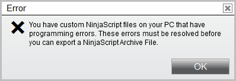
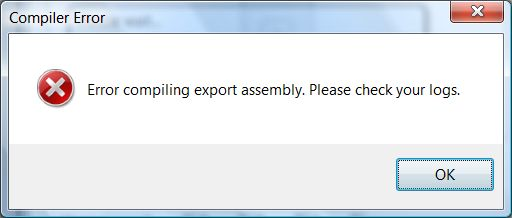
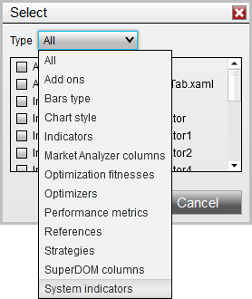
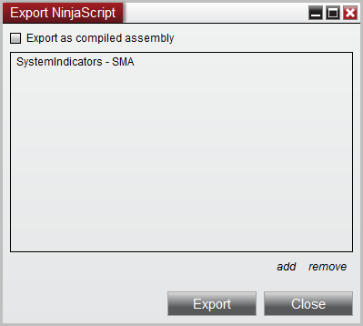

|
<< Click to Display Table of Contents >> Export Problems |


|
Export Problems
|
<< Click to Display Table of Contents >> Export Problems |
|
If you are having difficulties exporting NinjaScript it could be due to one of the following reasons:

|
If you are able to compile without errors and still experience exporting difficulties like the one above, check to see if you receive an error similar to this in the Control Center logs:
"3/6/2014 9:25:30 AM|2|4|Error compiling export assembly: C:\Users\NinjaTrader\Documents\NinjaTrader 8\bin\Custom\Indicator\MyCustomIndicator.cs(42,18) : error CS0118: NinjaTrader.Indicator.SMA is a type but is used like a variable"
Note: This error may have a different error code and message depending on which variant of .NET you have installed. An error message indicative of this issue would include an indicator name without quotation marks.
If you experience this error, please follow this procedure:
1. Take note of which indicator is referenced by the error. In the above example, it is the SMA 2. Go to your NinjaScript Export utility. (Tools > Export > NinjaScript...) 3. After press "add" select “System indicators” from the "Type" drop down

4. Add the indicator that was referenced in the error to the export list along with your custom NinjaScript by pressing the > button

5. Press the “Export” button to create your NinjaScript Archive File. If you receive the same error again, repeat this procedure until you add all the referenced system indicators and are able to successfully export your custom NinjaScript.
|